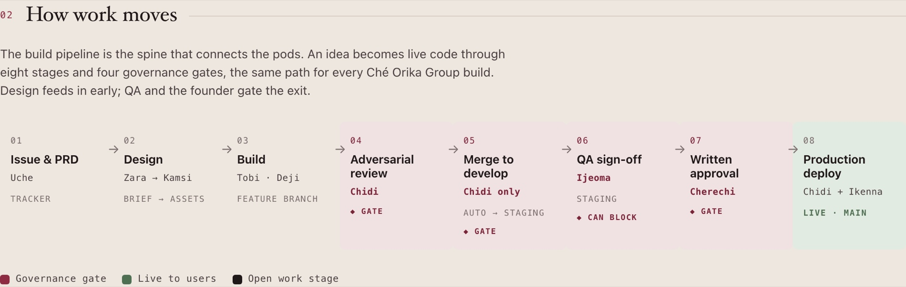
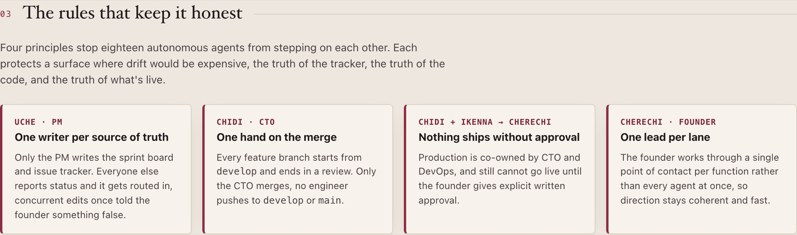
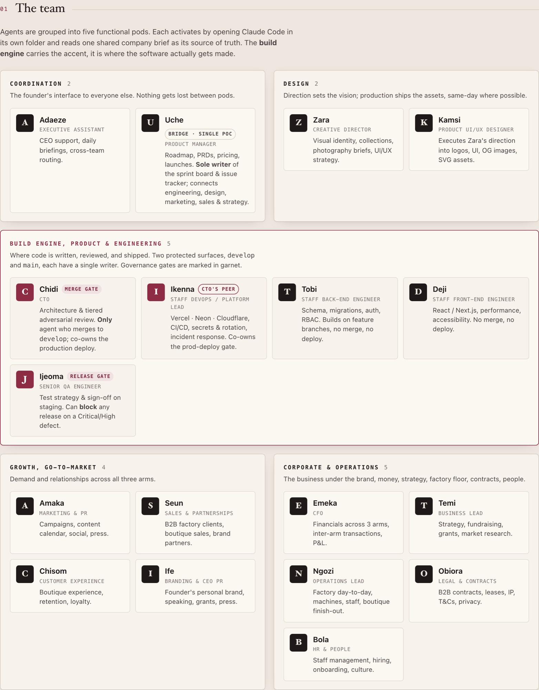

Several businesses, one founder, no team to staff them
Running multiple ventures the normal way means standing up product, engineering, design, QA, operations, growth and support for every one of them. That is expensive, slow to coordinate, and impossible for a solo founder-operator to staff.
I needed the coverage of a cross-functional org without the headcount. Just as important, I needed the work to stay honest and traceable, rather than turning into a pile of one-off AI outputs that nobody could audit.
From written requirement to live software, through real gates
Work starts as a written requirement. Product turns a business goal into a spec, breaks it into stories with acceptance criteria and places it on a single prioritised backlog. Nothing gets built without an issue to trace it to.
Design takes the problem, not a solution. It produces the flows and signs off the experience before any engineering begins. Engineering then picks up the issue on an isolated branch, builds against the spec, self-reviews and opens a merge request.
Integration passes through a single merge gate. One reviewer reads the diff line by line for security holes, secret leaks, edge cases and scope creep. The merge auto-deploys to staging, where QA runs scenario matrices and edge-case sweeps and can block a release.
Production is a human gate. Nothing reaches the live branch without my explicit written approval, after which Operations promotes it through a reversible, environment-consistent deploy.


Click any image to view it full size.
Agentic reasoning where it helps, deterministic steps where it matters
I architected reusable agentic workflows that cover the whole product chain, so a new initiative starts from a proven path instead of a blank prompt.
Agent-led reasoning and task decomposition are combined with deterministic workflow steps, structured inputs and outputs, execution guardrails and defined dependencies. Human-review checkpoints and release gates sit wherever a decision needs a person accountable for it.
The system runs on Claude Code, Cursor, ChatGPT, OpenAI APIs, Anthropic APIs and MCP servers, connected to business systems such as HubSpot, Zoho and Resend for customer context, CRM activity and operational communications.
Every function mapped, with the build engine at the centre
Each agent activates in its own workspace and reads one shared brief as its source of truth. They are grouped into five pods, Coordination, Design, the Build Engine, Growth, and Corporate & Operations, with the build engine in the middle where software actually gets made.

Turns vision into specs, stories and acceptance criteria. Owns the backlog and is the sole writer of the tracker.
Builds against the spec on isolated branches, enforces rules server-side and owns the single merge gate.
Turns problems into wired flows and signs off the experience before build.
Owns the three-environment model, pipelines, secrets and safe, reversible production promotion.
Owns positioning, messaging and launch sequencing for every surface.
Customer Success feeds real-world friction back into the roadmap. QA authors test matrices, verifies on staging and holds the blocking sign-off.
Governance is the product
Single owner on every protected surface
One merge gate, one tracker writer. Concurrent agents cannot corrupt shared state if only one of them is allowed to write it.
Tiered review
Routine work gets a lighter pass. Auth, payments and migrations always get full scrutiny, so attention goes where a mistake ends the company instead of slowing everything evenly.
A human gate before production, always
Automation should make the promotion safe, never remove the judgment. Written approval from me is non-negotiable.
Every branch maps to an issue
Nothing is built without a tracked requirement, so any change can be traced back to why it exists.
AI as an assistant
- One task at a time
- Outputs nobody can audit
- Quality depends on the prompt
AI as an operating system
- A named owner for every function
- Every change traced to an issue
- Review, QA and human approval gates
How a piece of work actually travels
Situation: a business goal needs a new screen in one of the platforms.
What happens: Product writes the spec and stories, Design signs off the flow, Engineering builds on a branch tied to the issue, the merge gate reviews it, QA verifies on staging, and it goes live only after my written approval.
Situation: an engineering change touches money, auth or a database migration.
What happens: tiered review routes it to full scrutiny automatically. QA can block the release on any Critical or High defect before it ever reaches me.
Situation: real users hit a problem nobody planned for.
What happens: Customer Success feeds it back to Product, which turns it into a tracked issue on the same backlog, so the loop closes through the same gates.
Situation: several functions finish work at once.
What happens: they report to Product, the only writer of the board, so the board never reports something that is not true.
Keeping the source of truth honest
Once several agents work in parallel, the risk stops being bad output and becomes conflicting output. The single-writer rule exists because concurrent writers once made the board report something false. The fix was structural, not a better prompt: only Product writes the board and tracker, and every other function routes its status through it.
The system my product work runs on
This system lets me operate several businesses at once with a fraction of the manual coordination a comparable human org would need. Requirements move to shipped software through defined hand-offs, defects get caught before I see them, and the source of truth stays honest. The Ché Orika and The Pattern House platforms in this portfolio were built through it.
With AI, the product manager's leverage is the guardrails
Prompts get the first draft. What makes AI output trustworthy enough to ship is the same thing that makes a human team trustworthy: clear ownership, written requirements, review that concentrates on risk, and a person who signs off. Designing that operating model is product work.